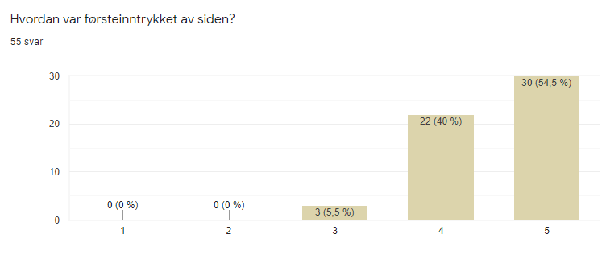
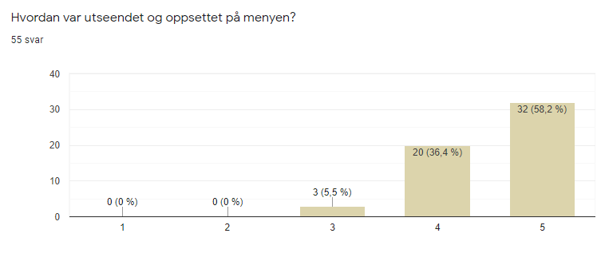
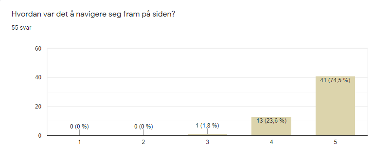
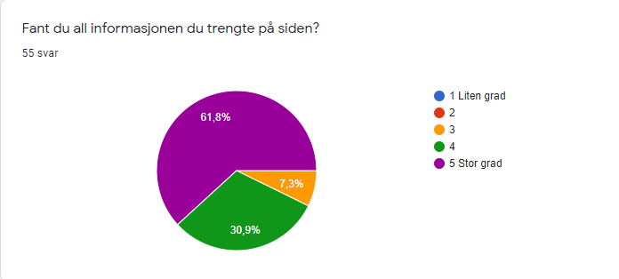
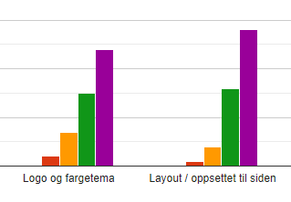

Klientens navn: Elise Råde, eier og daglig leder av Stemning kafé.
Nettsidens navn: Stemning kafè
Link til nettsiden: Stemning kafé
For å få flest mulig tilbakemeldinger på nettsiden vår laget vi et spørreskjema i Google Forms slik at vi kunne se hva folk tenkte og mente. Vi har valgt å lage et litt langt og ganske nøye skjema for å få mest ut av tankene folk har hatt. Her har vi spurt om alt fra alder, til enhet, til personlige meninger om de forskjellige sidene. I tillegg har vi fått testerne til å vurdere sidens struktur og funksjonalitet. På denne måten får vi et innblikk i hva andre tenker og hva vi kan gjøre for å forbedre siden vår.
Nettsiden vår har ikke basert seg på en ekte klient, så det er ikke mulig å få en vurdering fra noen som faktisk skulle brukt siden.
Link til Google Form
Etter testingen ble vi gjort oppmerksomme på at enkelte telefoner ikke har latt brukerne gi fem poeng på spørsmålene der dette er aktuelt. Dette kan ha påvirket fordelingen av poeng, men ettersom testerne har hatt mulighet til å legge ved eventuelle kommentarer, samt at både fire og fem poeng er positivt, tenker vi at svarene fortsatt er relevante.
Vi ønsket at målgruppen skulle være mennesker i alle aldersgrupper, ettersom kaféen ikke har noen spesifikk målgruppe, og dermed kan nettsiden komme til å bli brukt av alle aldersgrupper. Vi har hatt et høyt fokus på at nettsiden skal være lett å navigere gjennom slik at man fort får tak i informasjonen man er ute etter selv om man aldri har brukt nettsiden før. Dette er spesielt fordi vi kan forvente at en stor prosentandel av kundene er pensjonister som kanskje ikke har ekspertise i nettside-bruk. Med dette i tankene ønsket vi å få live-testet nettsiden med eldre folk, men på grunn av korona har vi ikke kunnet gjennomført dette på en trygg måte. 100% av personene vi har live-testet er derfor studenter, og noen av dem har vi live-testet over skjerm da noen av oss har vært i karantene. Vi har da brukt skjermdeling og voicechat for å få med oss mest mulig av det live-testerne observerer og sier. Vi skulle gjerne live-testet noen besteforeldre med skjermdeling, men det har vært vanskelig å få til med tanke på deres manglende forståelse for skjermdelingsfunksjonen. For å gjøre opp for det har vi vært ute etter å få med oss selv de minste tilbakemeldingene, for hvis en student som kanskje til og med har kjennskap til IT stusser på noe ved nettsiden vår er det godt mulig at mindre erfarne nettside-brukere kan møte på problemer.
Ut fra resultatene fra testingen vet vi at 3,6% av testerne var under 18 år, 69,1% av testerne var i aldersgruppen 19-30 år, 1,8% av testerne var i aldersgruppen 31-40 år, 10,9% var i aldersgruppen 41-50 år, 9,1% var mellom 51 og 60 år gamle og 5,5% var over 60 år gamle. Fordi vi har et begrenset antall testere i gruppene 51-60 og over 60 til tross for at dette er en ønskelig gruppe å teste siden vår på, har vi valgt å lese og vurdere tilbakemeldingene fra disse testerne ekstra nøye. Vi har konkludert med at deres tilbakemeldinger ikke skiller seg ut fra resten, og at siden dermed brukervennlig i like stor grad for disse aldersgruppene som for andre aldersgrupper.
Plattformer brukt for testing
50,9% av testerne oppga at de brukte PC for å teste nettsiden vår, mens 40% brukte mobil. Enkelte testere oppga at de testet på både PC og mobil. 5,5% brukte nettbrett. Nettsiden ble hovedsakelig testet i Google Chrome og Safari, hvorav 43,6% testet i Google Chrome og 29,1% testet i Safari. Andre nettlesere som ble brukt var Internet Explorer, Microsoft Edge, Mozilla Firefox, Opera og Brave (ikke med på illustrasjonen, da denne står på side 2/2).
Oppsummering av tilbakemeldinger
Tilbakemeldinger angående forside:

Med unntak av tre svar ga testerne førsteinntrykket av siden 4 og 5 poeng. Dette gjaldt også utseendet og oppsettet til forsiden. En av tilbakemeldingene som gikk igjen var at forsiden var skrevet på latin, ettersom vi brukte lorem i stedet for faktisk innhold. Andre tilbakemeldinger var at knappene på bildekarusellen burde være synligere, samt at teksten på bildekarusellen gikk i ett med bakgrunnen på enkelte av bildene.
Vi fikk også mange tilbakemeldinger på at bildene ikke var responsive fra brukere som ikke brukte Chrome. Dette gikk igjen på spørsmålet over. Ellers virker det som at alt på forsiden fungerer slik det skal.
Tilbakemeldinger angående meny:

Tilbakemeldingene på menyen har vært varierende. Flere av kommentarene handlet om styling, men her var folk uenige; noen ønsket mer luft mellom rettene, mens andre ønsket en mer kompakt meny, noen likte hvor oversiktlig menyen var, mens andre ønsket at den skulle være mer oversiktlig og penere. Enkelte har ønsket bilder av enkelte av rettene som serveres, og noen ønsket å kunne bestille direkte fra menyen. En av testerne tok opp at det ikke så ut som at ikonet som symboliserer at en rett er vegetarisk og forklaringen på hva ikonet betyr henger sammen, ettersom ikonet sto alene under avsnittet. Vi fikk også en tilbakemelding på at vegetarikonet ble brukt på retter som ikke er veganske. I tillegg ble vi gjort oppmerksomme på skrivefeil i menyen.
Med unntak av skrivefeilene og skalering for enkelte testere virker det som at menyen fungerer slik den skal.
Tilbakemeldinger angående bordbestilling:
Vi fikk svært mange tilbakemeldinger på at det ikke var mulig å sende inn bordbestillingsskjemaet. Det var også tilfeller der brukerne ikke fikk beskjed om feilmeldinger eller at bordet var bestilt. Det virker som at disse feilene var mest utbredt hos testere som brukte andre nettlesere enn Chrome. En annen tilbakemelding vi fikk flere ganger er at kalenderen og klokka for valg av dato burde vises når man klikker inn i feltet, ikke når man klikker på ikonet, da flere av testerne ikke fant disse ikonene.
Vi fikk også kommentarer på at vi har valgt å vise feilmeldinger og bekreftelse på bestilling som alerts. Det virker som at det er ønskelig at feilmeldingene vises direkte under inputfeltet når feltet er aktivt, ikke i en alert etter at skjemaet er forsøkt sendt inn. Det virker også ønskelig å bli sendt til en side som bekrefter innsendelsen (eller at skjemaet forsvinner til fordel for en ordrebekreftelse) framfor en alert. En av testerne kommenterte også på at det ikke ble utdelt et bordnummer ved bestilling.
Til tross for problemene virker det som at flertallet av testerne forsto hva tilbakemeldingene betydde. Vi fikk en tilbakemelding som stilte spørsmål til hvorfor telefonnummeret måtte være norsk og hvorfor man kun kan bestille bord til tidsrommet 11-19.
Tilbakemeldinger angående “Om oss”:
Testerne syntes "Om oss"-siden var informativ i varierende grad. Rundt 10% av de som tok undersøkelsen hadde noe å si om “Om oss”-siden. Her ønsket flere mer informasjon. Alt det vitale var der, men de ønsket for eksempel informasjon bak navnet til kafeen, bilder derfra, en tekst om hva som skiller denne kafeen fra de andre, og et bilde av kokken. I tillegg var det noen som ga tilbakemelding på at kartet var plassert feil og at linken til Facebook ikke tok dem til facebook-siden vår. Vi fikk også en kommentar på at kartets kunne vært plassert bedre på større skjermer.
Tilbakemeldinger angående navigasjon:


Under live-testingen observerte vi at de fleste testerne forsto hvordan de skulle navigere seg rundt på nettsiden. Dette går igjen i tilbakemeldingene. Det var flere som mislikte at navigasjonsmenyen på mobil var gjennomsiktig, samt at man måtte klikke på selve tittelen på siden man ønsket å bli dirigert til, i stedet for å kunne trykke på beskrivelsen av siden eller området rundt i tillegg. Vi fikk også en tilbakemelding om at det hadde vært fint med flere snarveier, slik at man kan komme til de ulike sidene uten å benytte seg av linkene i headeren. Eksempelet som ble brukt var at det hadde vært praktisk med en link fra selve forsiden til menyen.
Tilbakemeldinger angående layout:

Testerne virket å være fornøyde med sidens utseende i stor grad. På den ene live-testen ble det oppdaget at linken til forsiden i logoen spredte seg utover hele header i stedet for bare logoen. Vi fikk et par tilbakemeldinger på at linkene til sosiale media i footer burde åpnes i en ny fane, ikke i samme fane som nettsiden. En annen tilbakemelding var at footeren ikke burde miste informasjon i mobilversjon, men beholde alt som er i PC-versjonen. Det virker som at flere av testerne ønsket at siden skulle fremheve Stemning kafés identitet i større grad, blant annet ved å vektlegge “stemning” og vise flere bilder av kaféen.
Tilbakemeldinger angående funksjonalitet:

De fleste av testerne virket fornøyde med funksjonaliteten til siden. Enkelte testere ønsket mer funksjonalitet. Vi tolker dette som et ønske om en mer interaktiv side.
Forside:
Etter å ha fått tilbakemeldinger på forsiden har vi gjort knappene på bildekarusellen litt mindre gjennomsiktige så de synes bedre, og bakgrunnen har vi gjort mørkere så teksten vises bedre over de ulike bildene. Vi har valgt å endre fra lorem til forståelig tekst for å illustrere hvordan det er tenkt at forsiden skal se ut, selv om lorem kun er ment som placeholder og dermed fungerer som det skal. Det andre avsnittet er fortsatt lorem, ettersom dette avsnittet kun skal illustrere hva som er tenkt med tanke på utforming. Dersom vi skulle ha jobbet videre med nettsiden kunne vi ha endret bildekarusellen slik at timeren for bytting av bilde nullstilles når brukeren selv bytter bilde. Vi kunne i tillegg ha gjort overgangen mellom bildene glidende, slik at den hadde blitt mer behagelig å se på.
Meny:
Hadde et flertall kommet til en enighet angående stylingen kunne vi vurdert å endre på siden, men bare 20% av de som tok undersøkelsen har kommentert noe på det i det hele tatt, så de fleste ser ut til å være fornøyd med designet. Kommentarene vi fikk var uenige om hvilke endringer som burde gjøres, noe som uansett vil gjøre det vanskelig å endre designet for å gjøre testerne mer fornøyde. Den eneste endringen vi har gjort er å koble sammen vegetarikonet med en tekst i stedet for å la det stå alene under paragrafen. Vi fikk en kommentar på at ikonet så ut som pynt under paragrafen og at det var uklart at de var koblet sammen. Dette var vi enige i, så vi valgte derfor å endre på dette. Vi har også formulert avsnittet på en annen måte for å unngå formuleringen vi tror førte til misforståelsen om at ikonet symboliserer at en rett er vegansk, ikke vegetarisk. I tillegg rettet vi opp skrivefeilene.
Bordbestilling:
Vi har funnet feilen som fører til at man får feilmelding uavhengig av valgt dato. Denne har blitt rettet opp. Dersom vi hadde hatt bedre tid ville vi ha forsøkt å gjøre skjemaet kompatibelt med andre nettlesere enn Google Chrome i større grad, men vi har ikke prioritert dette da vi har begrenset med tid og det kun er spesifisert at siden skal fungere i Chrome. Det er spesifikt alert som har vært et problem for flere brukere, da ikke alle nettlesere støtter dette; vi har spesielt hatt problemer med Safari. Vi ser at det er et problem at knappene for å vise kalenderen og klokka ikke er så synlig som vi skulle ønske. Vi har ikke funnet en metode for å åpne disse automatisk, men dersom vi skulle jobbet videre med nettsiden er dette noe vi ville ha prioritert. I tillegg ble vi enige om at den beste løsningen på å vise bestillingen er å bruke alert, for da har brukeren muligheten til å legge inn en ny bestilling uten å måtte gå inn på siden på nytt. En annen løsning kunne vært å gjemme skjemaet til fordel for et HTML-element med brukerens informasjon når brukeren sender inn en bestilling. Vi har ikke valgt å adressere tilbakemeldingen om at man ikke får utdelt bordnummer ved bestilling, da dette ikke er vanlig.
Om oss:
Vi er enige i at “Om oss”-siden ikke inneholdt tilstrekkelig med informasjon om kaféen. Vi har derfor valgt å legge inn lorem som skal symbolisere informasjon om kaféen, kaféens tradisjoner og ansatte. Dette var for å gjøre siden til en mer “Om oss”-side og ikke bare en “Kontakt oss”-side. Vi endret ikke på google maps-problemet som ble kommentert, fordi ingen av oss har en stor nok skjerm til å følge opp feil plasseringsproblemet. Vi fikk også kommentarer på at linken til Facebook-ikonet fører bare folk til Facebook og ikke til Stemning kafé sin Facebookside. Dette har vi valgt å ikke endre på, siden Stemning kafé ikke er en ordentlig kafé, og da ville det vært uheldig å opprette en egen Facebookside til kafeen, dette pga retningslinjer hos Facebook og forvirring for folk som kan snuble over siden.
Navigasjon:
I burgermenyen på mobilversjonen var det tidligere slik at du ville kun bli dirigert til en annen side hvis du trykket på overskriften. Dette har vi omgjort, slik at du nå kan trykke på både beskrivelsen og overskriften for å komme til den relevante siden. Vi gjorde denne endringen fordi vi er enige i at det er like naturlig å trykke på beskrivelsen av siden man vil besøke som tittelen på siden. Vi har lagt til at linkene i footer og “Om oss” åpnes i en annen fane som ønsket av noen. At hele headeren er en link til forsiden på mobilversjonen er noe vi ville ha endret dersom vi skulle jobbet mer med nettsiden. Dette ødelegger for sidens funksjonalitet, så alt fungerer som det skal, men det skal i utgangspunktet ikke være sånn, så det er en bug vi hadde fikset om vi hadde hatt mer tid. Vi har ikke valgt å legge til snarveier til sidene i tillegg til linkene i headeren. Dette er noe vi kunne ha sett på dersom vi hadde hatt mer tid, da vi ser at dette er hensiktsmessig både for brukerne og kaféen.
Layout:
Vi har gjort burgermenyen på mobilversjonen ugjennomsiktig ettersom flere mente at det ikke så veldig bra ut da den var gjennomsiktig. Vi har ikke fulgt opp tilbakemeldingen om ønsket margin til høyre for burgermenyen, men dette er noe vi kunne ha sett på og vurdert dersom vi skulle jobbet videre. Vi er enige i at navnet på logoen var veldig utydelig i den lille logoen, så vi har justert opp størrelsen på navnet og lagt til en svart border rundt teksten i et håp om at det skal gjøre navnet på logoen mer synlig. Selv mener vi at det er tydelig nå, men en ny undersøkelse kunne ha avslørt om det er tydelig nok.
Når det kommer til kommentaren om at footeren burde inneholde samme mengde informasjon i mobilversjon og PC-versjon har vi ikke gjort noen endringer. Denne kommentaren var det bare et par personer som sa noe om, vi kan være enige i at informasjonen kanskje burde være der, men da bli footeren til en lengre kolonne. Vi har kommet fram til at en mindre footer med mindre er å foretrekke over en lengre footer, ettersom den resterende informasjonen fortsatt vil være tilgjengelig på “Om oss”-siden. Vi hadde nok endret på det om vi hadde fått flere kommentarer på det, men to var ikke nok til at vi valgte å prioritere dette. Vi har prioritert sosiale medier ettersom vi går ut fra at sosiale medier brukes i større grad på mobil enn på PC, og det er dermed viktigere at sosiale media er godt synlig for brukere på telefon.
Vi er enige i at det til fordel kunne vært flere bilder av kaféen e.l. som viser Stemning kafés identitet. Hvis vi skulle jobbet videre på siden er dette noe vi kunne ha prøvd å utarbeide en løsning på. Samtidig ser vi at dette med stor sannsynlighet vil medføre omfattende endringer i layout, så dette ville ikke ha blitt prioritert først.
Funksjonalitet:
Vi har ikke prioritert å gjøre siden mer interaktiv. Å gjøre siden mer interaktiv ville vært en stor endring, og med tanke på at det var få tilbakemeldinger på dette ville vi heller ha prioritert andre endringer.
Før start vet man aldri hvordan et prosjekt vil bli. Alle har forskjellige meninger, og vi sitter inne med forskjellig kunnskap, og som gruppe må vi gjøre hverandre gode for at prosjektet skal bli best mulig. Resultatet har blitt veldig bra og vi har klart å jobbe oss gjennom de forskjellige oppgavene og utfordringene.
I starten lagde vi en plan over hvem som skulle gjøre hva og når ting skulle være ferdig, dette var en veldig god ide. Dette gjorde at vi alltid hadde en god oversikt over når ting skal være klart, noe som er en verdifull ting når man er stressa. Så klart har vi ikke gjort akkurat som det stod at vi skulle, for endringer kommer underveis og nye ideer kommer hele tiden. Vi føler vi har lært å bli flinkere på tydelig kommunikasjon og det å hele tiden være åpen for nye ideer, for alle har sine meninger, og noen ideer gjør siden bedre og andre gjør ikke det. Det kan være utfordrende å finne en balanse mellom åpenhet for og kritikk av nye ideer. Vi har gjennom hele prosjektet forsøkt å finne denne balansen. Det er verdifull læring i å kunne skille mellom når endringer er på sin plass og når det er best å la alt forbli slik det er. Dette har også gitt oss mer erfaring med å gi og motta konstruktiv kritikk, noe vi føler er viktig å ta med oss videre.
Vi har lært mye om hvordan en kan bruke HTML, CSS og JavaScript til å få en nettside til å se like bra ut som en offisiell nettside. Utviklingen fra første utkast av nettsiden til ferdig resultat har vært givende å se på. Ting ble mye bedre enn vi først hadde trodd og sett for oss, så her ser vi at det hele tiden er viktig med nye innspill og ideer. JavaScripten har gjort nettsiden mye mer interaktiv, noe som gjør at siden virker mer profesjonell. Dette har økt forståelsen vår for hvor viktig JavaScript er for en nettside.
Vi har fra start prøvd å ha jevnlige møter, der vi møter og snakker om hvordan vi syns det går så langt og nye innspill kommer inn. På møter er det viktig at man møter opp når man skal, for i en gruppe er man nødt til å respektere hverandre og hverandres tid, og dette er noe vi kunne vært bedre på til tider. Men vi har vært veldig flinke til å hjelpe hverandre og det er selve essensen i det å ha et godt gruppearbeid. Det å tørre å spørre om hjelp er kjempeviktig i et samarbeid, og det vil vi si at vi alle har gjort uten at det har vært et stort problem. Vi føler at dette har gitt oss et innblikk i hvordan man arbeider med prosjekter, ettersom dette er første gang vi jobber såpass selvstendig med et prosjekt.
Et samarbeid er sjeldent smertefritt, og vårt er ikke et unntak. Men vi har jobbet oss gjennom dette sammen og bygget hverandre opp etterhvert, slik at vi alle har lært nye ting på forskjellige områder. Resultatet har blitt bra til slutt og vi sier oss fornøyde med hva vi har klart å få til gjennom denne perioden med arbeidet sammen.